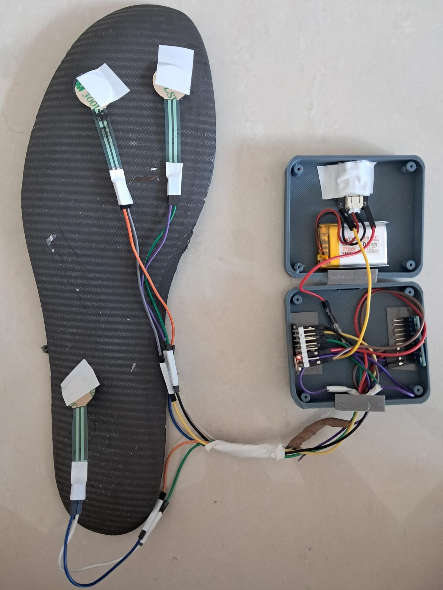

Live fall risk
A 0 to 100 index with three bands (safe, caution, high risk), alongside the pressure split across four foot zones.
Engineering Innovation Challenge 2026 · Working prototype
A smart insole that scores fall risk while you walk, and reads the gait changes that show up before cognitive decline does.
Left insole, control pod opened. Tap a marker to name the part.

Turn this on, drag any marker on the photo, and the coordinates below update live. Positions save in this browser.
Flutter, Android and iOS. Connects straight to the insole over BLE.
A 0 to 100 index with three bands (safe, caution, high risk), alongside the pressure split across four foot zones.
A dual-task walk: count backwards while you walk. Gait that degrades under mental load is an early marker of decline, and the app scores that drop.
Opt-in learning of each wearer's own gait, so risk is judged against how they normally walk, not a population average.
Impact and free-fall signatures in the IMU trigger an alert on their own, independent of the risk score.
A carer or clinician links to the wearer and sees sessions, risk trends and alerts as they sync.
Every walk is archived with its full feature set, exportable as CSV or PDF for a clinic visit.
Accuracy on held-out data the models never trained on.
| Model | Task | Accuracy | Macro-F1 |
|---|---|---|---|
| Activity 1D-CNN | 5-class activity | 98.3% | 0.978 |
| FRI MLP | 3-class fall risk | 95.0% | 0.950 |
| RandomForest | UCI HAR baseline | 92.5% | n/a |
The activity model runs on the phone at 23.6 KB and 0.022 ms per window, tested on a subject-disjoint split of the UCI HAR dataset, so no subject appears in both training and test.